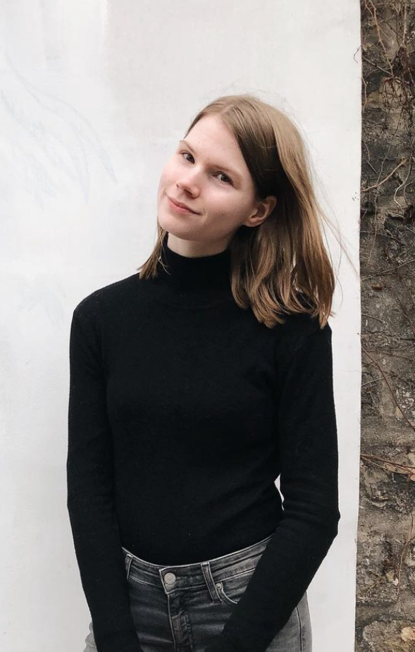
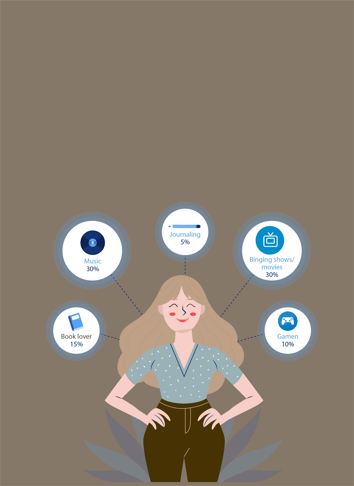
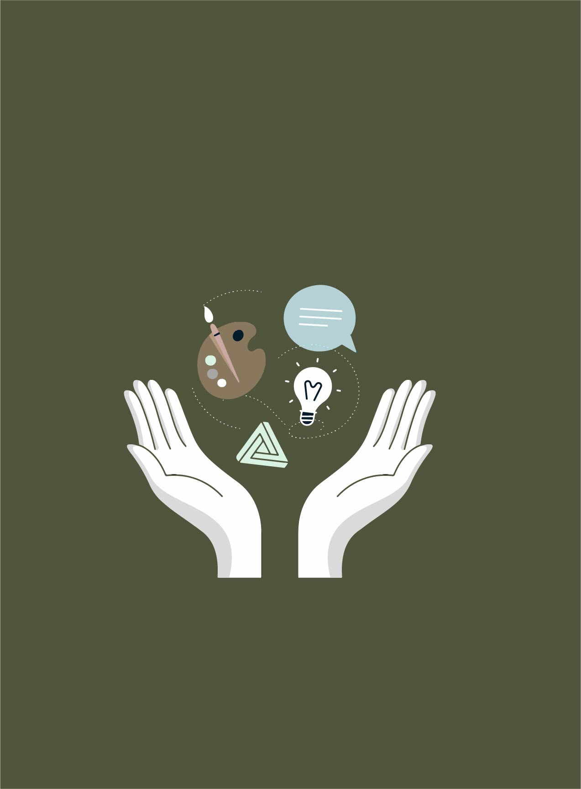

Farrahton Piers
Ik ben een 20-jarige Creative Business student. Tijdens mijn studie ben ik bezig geweest met ontwerpen, produceren, vermakten en verspreiden van content en media. Met deze minor wil ik doorgroeien tot een allround creative die bijvoorbeeld naast de brand en marketinguittingen voor een bedrijf ook de website bij kan houden.
Wil je meer weten over mij? Lees snel verder op de volgende pagina!

Interesses in plaats van hobby's
Tja, ik noem mijzelf wel een multipotentialite, want ik ben geïntereseerd in zoveel verschillende dingen. De struggle hiervan is dat ik het niet met regelmaat doe, waardoor het niet per se een hobby meer is.
- ✓ Muziek vinden, luisteren en maken (gitaar/piano/drummen)
- ✓ Lezen, lekker ouderwets, maaar ik lees meer ebooks dus ook weer niet
- ✓ Op een circusbal lopen
- ✓ Foto's maken o.a. van mijn 5 katten
- ✓ Karten like Mariooo but for real
- ✓ Gamen en schreeuwen wanneer ik verlies

Mijn skillset
- ✓ Behulpzaam
- ✓ Pen trucjes om vinger laten draaien
- ✓ Creatief
- ✓ Easter eggs in projecten verwerken
- ✓ Ambitieus, maar realistisch
- ✓ Zelfreflecterend